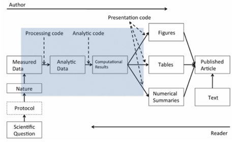

44 Reproducible Reporting
Reproducibility of computational research is very important, primarily to increase transparency and to improve knowledge sharing.
44.1 Goal
The goal is to have independent people to do independent things with different data, different methods, and different laboratories and see if you get the same result. But the problem is that it’s becoming more and more challenging to do replication or to replicate other studies. Part of the reason is because studies are getting bigger and bigger.
The idea behind a reproducible reporting is to create a kind of minimum standard or a middle ground where we won’t be replicating a study, but maybe we can do something in between.
You need to make the data available for the original study and the computational methods available so that other people can look at your data and run the kind of analysis that you’ve run, and come to the same findings that you found. If you can take someone’s data and reproduce their findings, then you can, in some sense, validate the data analysis.
Understanding what someone did in a data analysis now requires looking at code and scrutinizing the computer programs that people used.
44.2 The Data Science Pipeline
The basic idea behind reproducibility is to focus on the elements in the blue blox: the analytic data and the computational results.

With reproducibility the goal is to allow the author of a report and the reader of that report to “meet in the middle”.
44.3 Organizing a Data Analysis
- Raw Data:
- You want to store this raw data in your analysis folder.
- If the data were accessed from the web you want to include things like the URL, where you got the data, what the data set is, a brief description of what it’s for, the date that you accessed the URL on, the website, etc.
- You may want this in a README file.
- If you’re using git to track things that are going on in your project, add your raw data, if possible. In the log message, when you add it you can talk about what the website was where you got it, what the URL was, etc.
- Processed Data:
- Your processed data should be named so that you can easily see what script generated what data.
- In any README file or any sort of documentation, it’s important to document what code files were used to transform the raw data into the processed data.
- Figures:
- Exploratory figures.
- Final figures. The final figures usually make a very small subset of the set of exploratory figures that you might generate. You typically don’t want to inundate people with a lot of figures because then the ultimate message of what you’re trying to communicate tends to get lost in a pile of figures.
- Scripts:
- Final scripts will be much more clearly commented. You’ll likely have bigger comment blocks for whole sections of code.
- R Markdown files:
- They may not be exactly required, but they can be very useful to summarize parts of an analysis or an entire analysis.
- You can embed code and text into the same document and then you process the document into something readable like a webpage or a PDF file.
- Final Report:
- The point of this is to tell the final story of what you generated here.
- You’ll have a title, an introduction that motivates your problem, the methods that you used to refine, the results and any measures of uncertainty, and then any conclusions that you might draw from the data analysis that you did, including any pitfalls or potential problems.
44.4 Structure of a Data Analysis
1. Defining the question:
A proper data analysis has a scientific context, and at least some general question that we’re trying to investigate which will narrow down the kind of dimensionality of the problem. Then we’ll apply the appropriate statistical methods to the appropriate data.
Defining a question is the most powerful dimension reduction tool you can ever employ.
The idea is, if you can narrow down your question as specifically as possible, you’ll reduce the kind of noise that you’ll have to deal with when you’re going through a potentially very large data set.
Think about what type of question you’re interested in answering before you go delving into all the details of your data set. That will lead you to the data. Which may lead you to applied statistics, which you use to analyze the data.
2. Defining the ideal dataset/Determining what data you can access (the real data set):
- sometimes you have to go for something that is not quite the ideal data set.
- You might be able to find free data on the web. You might need to buy some data from a provider.
- If the data simply does not exist out there, you may need to generate the data yourself in some way.
3. Obtaining the data:
You have to be careful to reference the source, so wherever you get the data from, you should always reference and keep track of where it came from.
If you get data from an Internet source, you should always make sure at the very minimum to record the URL, which is the web site indicator of where you got the data, and the time and date that you accessed it.
4. Cleaning the data:
Raw data typically needs to be processed in some way to get it into a form where you can model it or feed it into a modeling program.
If the data is already pre-processed, it’s important that you understand how it was done. Try to get some documentation about what the pre-processing was and how the sampling was done.
It is very important that anything you do to clean the data is recorded.
Once you have cleaned the data and you have gotten a basic look at it, it is important to determine if the data are good enough to solve your problems.
If you determine the data are not good enough for your question, then you’ve got to quit, try again, change the data, or try a different question. It is important to not simply push on with the data you have, just because that’s all that you’ve got, because that can lead to inappropriate inferences or conclusions.
5. Exploratory data analysis:
It would be useful to look at what are the data, what did the data look like, what’s the distribution of the data, what are the relationships between the variables.
You want to look at basic summaries, one dimensional, two dimensional summaries of the data and we want to check for is there any missing data, why is there missing data, if there is, create some exploratory plots and do a little exploratory analyses. o Split the data set into Train and Test data sets:
library(kernlab) data(spam) set.seed(3435) trainIndicator = rbinom(4601, size = 1, prob = 0.5) table(trainIndicator) trainSpam = spam[trainIndicator == 1, ] testSpam = spam[trainIndicator == 0, ]We can make some plots and we can compare, what are the frequencies of certain characteristics between the spam and the non spam emails:
boxplot(capitalAve ~ type, data = trainSpam) pairs(log10(trainSpam[, 1:4] + 1)) ## pairs plot of the first four variablesYou can see that some of them are correlated, some of them are not particularly correlated, and that’s useful to know.
Explore the predictors space a little bit more by doing a hierarchical cluster analysis, e.g. the Dendrogram just to see how what predictors or what words or characteristics tend to cluster together
hCluster = hclust(dist(t(trainSpam[, 1:57]))) plot(hCluster)
6. Statistical prediction/modeling:
Any statistical modeling that you engage in should be informed by questions that you’re interested in, of course, and the results of any exploratory analysis. The exact methods that you employ will depend on the question of interest.
we’re just going to cycle through all the variables in this data set using this for-loop to build a logistic regression model, and then subsequently calculate the cross validated error rate of predicting spam emails from a single variable.
Once we’ve done this, we’re going to try to figure out which of the individual variables has the minimum cross validated error rate. It turns out that the predictor that has the minimum cross validated error rate is this variable called charDollar. This is an indicator of the number of dollar signs in the email.
We can actually make predictions now from the model on the test data (now we’re going to predict the outcome on the test data set to see how well we do).
we can take a look at the predicted values from our model, and then compare them with the actual values from the test data set, because we know which was spam, and which was not. Now we can just calculate the error rate.
7. Interpretation of results:
Think carefully about what kind of language you use to interpret your results. It’s also good to give an explanation for why certain models predict better than others, if possible.
If there are coefficients in the model that you need to interpret, you can do that here.
And in particular it’s useful to bring in measures of uncertainty, to calibrate your interpretation of the final results.
8. Challenging of results:
It’s good to challenge everything, the whole process by which you’ve gone through this problem. Is the question even a valid question to ask? Where did the data come from? How did you get the data? How did you process the data? How did you do the analysis and draw any conclusions?
And if you built models, why is your model the best model? Why is it an appropriate model for this problem? How do you choose the things to include in your model?
All these things are questions that you should ask yourself and should have a reasonable answer to, so that when someone else asks you, you can respond in kind.
9. Synthesis and write up:
Typically in any data analysis, there are going to be many, many, many things that you did. And when you present them to another person or to a group you’re going to want to have winnowed it down to the most important aspects to tell a coherent story.
Typically you want to lead with the question that you were trying to address.
It’s important that you don’t include every analysis that you ever did, but only if its needed for telling a coherent story. Talk about the analyses of your data set in the order that’s appropriate for the story you’re trying to tell.
Include very well done figures so that people can understand what you’re trying to say in one picture or two.
10. Creating reproducible code:
You can use tools like RMarkdown and knitr and RStudio to document your analyses as you do them.
You can preserve the R code as well as any kind of a written summary of your analysis in a single document using knitr.
If someone cannot reproduce your data analysis then the conclusions that you draw will be not as worthy as an analysis where the results are reproducible.
44.5 R Markdown
The benefit of Markdown for writers is that it allows one to focus on writing as opposed to formatting. It has simple and minimal yet intuitive formatting elements and can be easily converted to valid HTML (and other formats) using existing tools.
R markdown is the integration of R code with Markdown. Documents written in R Markdown have R coded nested inside of them, which allows one to create documents containing “live” R code.
R markdown can be converted to standard markdown using the knitr package in R. Markdown can subsequently be converted to HTML using the markdown package in R.
44.6 Knitr
For literate statistical programming, the idea is that a report is viewed as a stream of text and code.
Analysis code is divided into code chunks with text surrounding the code chunks explaining what is going on: - In general, literate programs are weaved to produce human-readable documents - and tangled to produce machine- readable documents
The requirements for writing literate programs are a documentation language (Markdown) and a programming language (R).
My First knitr Document:
Open an R Markdown document.
RStudio will prompt you with a dialog box to set some of the metadata for the document.
When you are ready to process and view your R Markdown document the easiest thing to do is click on the Knit HTML button that appears at the top of the editor window.
Note here that the the code is echoed in the document in a grey background box and the output is shown just below it in a white background box. Notice also that the output is prepended with two pound symbols.
Code chunks begin with
{r} and end with just. Any R code that you include in a document must be contained within these delimiters, unless you have inline code.Hiding code:
{r pressure, echo=FALSE}Hiding results:
{r pressure, echo=FALSE, results = “hide”}Rather than try to copy and paste the result into the paragraph, it’s better to just do the computation right there in the text:
My favourite random number is
r rnorm(1)Tables can be made in R Markdown documents with the help of the xtable package.
The opts_chunk variable sets an option that applies to all chunks in your document. For example, if we wanted the default to be that all chunks do NOT echo their code and always hide their results, we could set:
knitr::opts_chunk$set(echo = FALSE, results = “hide”)
Global options can always be overridden by any specific options that are set in at the chunk level:
{r pressure, echo=FALSE, results = “asis”}Chunk caching. If you have a long document or one involving lengthy computations, then every time you want to view your document in the pretty formatted version, you need to re-compile the document, meaning you need to re- run all the computations. Chunk caching is one way to avoid these lengthy computations.
cache = TRUEIncluding a call to
sessionInfo()at the end of each report written in R (perhaps with markdown or knitr) can be useful for communicating to the reader what type of environment is needed to reproduce the contents of the report.